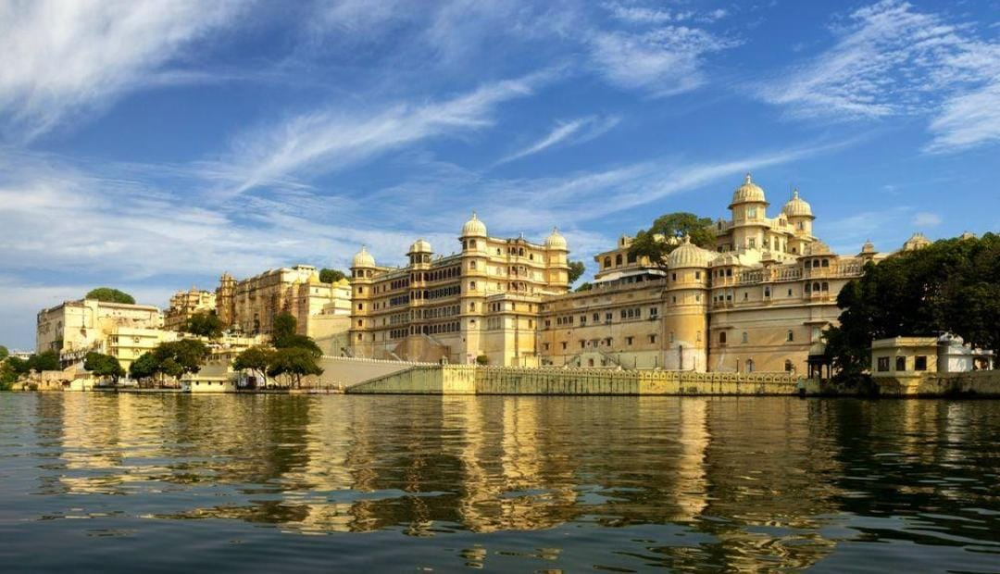
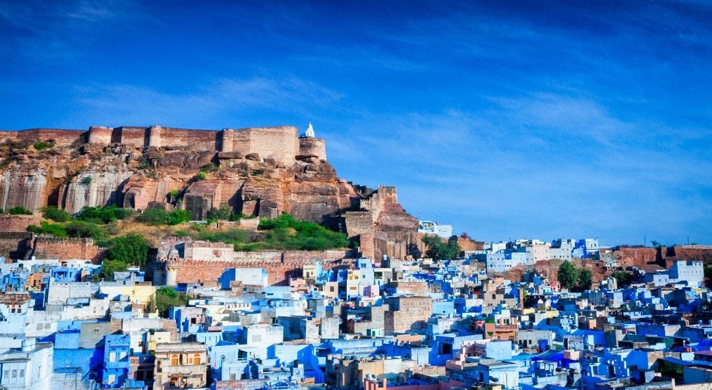

Package Overview
Discover Rajasthan on a multi-city holiday. Suggested route: Jaipur (2 nights) for Amber Fort and the Pink City; Udaipur (2 nights) for City Palace and Lake Pichola; Jodhpur (1 night) for Mehrangarh Fort and blue lanes; Jaisalmer (2 nights) for the golden fort and desert experience. Package price is shared on request based on travel date, hotel category and number of travellers.

Jaipur – Hawa Mahal

Udaipur – City Palace

Jodhpur – Blue City
Customize Your Journey
Customized packages are also available as per your travel dates, budget, preferred hotels and sightseeing requirements. Contact our team for the latest availability and final quotation.
Enquire on WhatsApp Explore More Packages